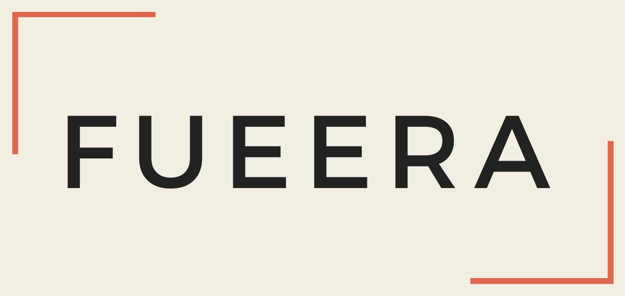
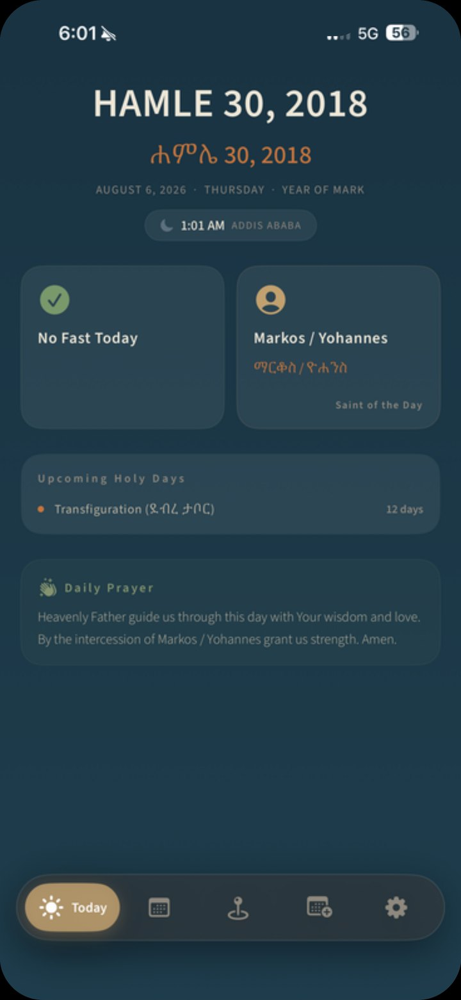
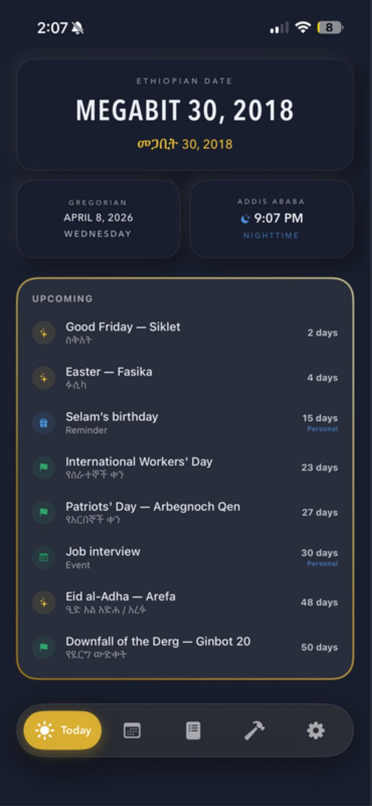

Fueera LLC — Software Division
Four apps, each built for a problem we lived first.
iPhone, Apple Watch and Android apps for the Ethiopian diaspora and the families in it — a church calendar, the Ge'ez calendar in your widgets, a digital fast, and a first-words tracker for bilingual homes.
001 / 004
Liturgical calendar · iPhone, Apple Watch & Android
ጾም እና በዓላት
EOTC Calendar
Your daily spiritual companion.
The calendar of the Ethiopian Orthodox Tewahedo Church — every fast, feast and saint's day — for a diaspora whose church keeps different dates from the country around them.
- —Fast tracking with automatic reminders
- —Apple Watch, Lock Screen and Home Screen widgets
- —English and አማርኛ, with Ge'ez numerals

002 / 004
Everyday calendar · iPhone, Android & widgets
Ethiopian Calendar & Widgets
Your day at a glance — in Ethiopian time.
The Ge'ez calendar for daily life: Ethiopian and Gregorian dates side by side, Addis Ababa time on the Ethiopian clock, and holidays that come with their history.
- —Switch the whole app between calendars
- —Reminders set in Ethiopian daylight time
- —Widgets from a single date to a full month

003 / 004
Digital wellbeing · iPhone
NURU
Reclaim your attention. One day at a time.
Block the apps that pull at you for a set fast — alone, or with a Circle that shares one daily break window across timezones. Built for religious fasting seasons, useful to anyone.
- —Fasts from 7 to 90 days, or your own length
- —Fasting Circles with a shared break window
- —A mindful pause before any early unlock
004 / 004
Early childhood · iPhone
DuoBaby
First words, in every language you speak at home.
A first-words tracker for bilingual families. DuoBaby suggests age-appropriate words to teach, keeps track of every new one, and offers tips along the way — in around 120 languages.
- —AI-suggested words for your child's age
- —Every new word, tracked in both languages
- —Around 120 languages supported